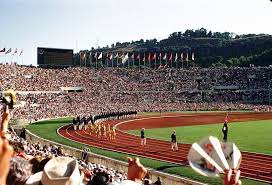

Pierre De Coubertin
L’uomo che creò le olimpiadi dei nostri giorni
L’uomo che creò le olimpiadi dei nostri giorni
Pierre de Coubertin è stato un importante filosofo e pedagogista francese, noto soprattutto per il suo contributo alla rinascita delle Olimpiadi moderne. Coubertin ha trascorso gran parte della sua vita a promuovere l'educazione fisica e lo sport come mezzo per rafforzare la formazione morale e intellettuale dei giovani. L'ispirazione per le moderne Olimpiadi è stata tratta dall'antica Grecia, dove le Olimpiadi erano un importante evento sportivo e culturale. Coubertin era affascinato dalla tradizione greca e dalla sua concezione dello sport come un mezzo per raggiungere l'armonia tra corpo e mente. Egli credeva che le Olimpiadi moderne potessero svolgere un ruolo importante nel promuovere la pace e la comprensione internazionale. Nel 1894, Coubertin fondò l'International Olympic Committee (IOC) e lavorò per riunire gli atleti di tutto il mondo in una competizione pacifica e leale.
Nel 1896, le prime Olimpiadi moderne furono celebrate a Atene, segnando l'inizio di una tradizione che continua ancora oggi. Le Olimpiadi moderne sono diventate un importante evento internazionale, riunendo atleti di tutto il mondo e promuovendo la pace e la comprensione internazionale. Questo risultato sarebbe stato impossibile senza l'impegno e la visione di Pierre de Coubertin, che ha dedicato la sua vita a rinnovare l'antica tradizione greca e a portare l'importanza dello sport e dell'educazione fisica a livello mondiale. Il 5 settembre 1972, durante le Olimpiadi di Monaco di Baviera, un gruppo di terroristi palestinesi noti come "Squadrone Black September" attaccò la squadra israeliana di scherma. L'attacco, che ebbe luogo nella Casa della squadra olimpica israeliana, causò la morte di 11 atleti israeliani, un allenatore e un poliziotto. Questo tragico evento ha scosso il mondo intero e ha messo in evidenza la crescente minaccia del terrorismo internazionale. Le Olimpiadi di Monaco 1972 sono state una delle prime volte in cui il terrorismo ha interrotto un evento sportivo globale. La risposta internazionale all'attacco fu rapida e decisa, con molti paesi che espressero solidarietà con Israele e condannarono il terrorismo. L'attacco di Monaco è stato un importante punto di svolta nella lotta contro il terrorismo e ha portato a una maggiore attenzione e sicurezza per gli eventi sportivi internazionali. Tuttavia, purtroppo, fatti tristi come questo continuano a verificarsi in tutto il mondo, ricordandoci della necessità di continuare a lavorare per la pace e la sicurezza globale.